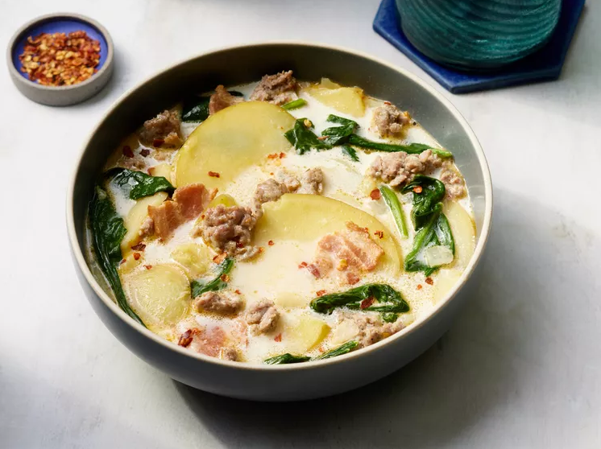

Zuppa Toscana

Photo Credit: Dotdash Meredith Food Studios
Ingredients:
- 1 pound bulk mild Italian sausage
- 1 ¼ teaspoons crushed red pepper flakes
- 4 slices bacon, cut into ½-inch pieces
- 1 large onion, diced
- 1 tablespoon minced garlic
- 5 (13.75 ounce) cans chicken broth
- 6 medium potatoes, thinly sliced
- 1 cup heavy cream
- ¼ bunch fresh spinach, tough stems removed
Directions:
- Gather all ingredients.
- Cook Italian sausage and red pepper flakes in a Dutch oven over medium-high heat until crumbly, browned, and no longer pink, 10 to 15 minutes. Drain and set aside.
- Cook bacon in the same Dutch oven over medium heat until crisp, about 10 minutes.
- Drain, leaving a few tablespoons of drippings with the bacon in the bottom of the Dutch oven. Stir in onions and garlic; cook until onions are soft and translucent, about 5 minutes.
- Stir in chicken broth and bring to a boil over high heat.
- Add potatoes and simmer until fork tender, about 20 minutes.
- Reduce heat to medium; stir in cream, cooked sausage, and spinach.
- Cook and stir until spinach has wilted and sausage is warmed through; serve.
- Photo and text originally posted on allrecipes.com.
<-- Go back home?